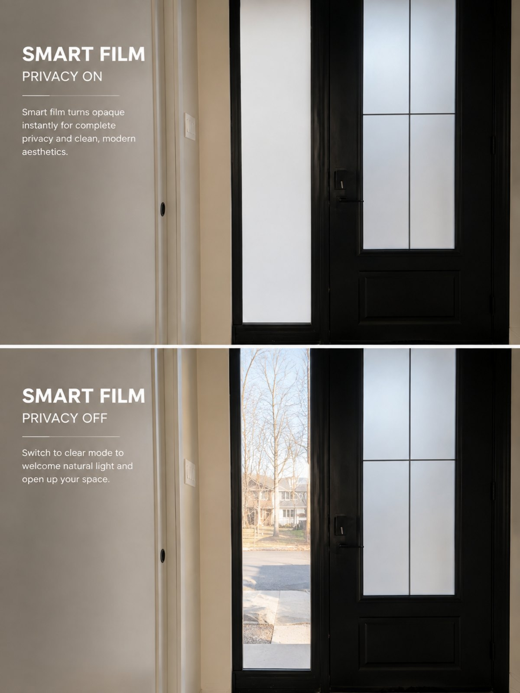

What is smart film?
A thin, self-adhesive film applied to glass. Inside it is a layer of PDLC (polymer-dispersed liquid crystal). With power off, the crystals scatter light and the glass looks frosted — fully private. Apply a small current and the crystals align: the glass turns clear instantly. Flick a switch, use a remote, an app or a voice command.
How it works
We apply the film to your existing glass (windows, doors, partitions, shower screens, storefronts) and connect it to a small transformer. Control by:
- Wall switch — simplest.
- Remote or app — including scheduling.
- Voice / smart home — “make the office private.”
Frosted is the default (power off), so privacy is guaranteed even in a power cut. In clear mode the film is highly transparent with a slight haze — like very good glass. It also blocks most UV.

Where it’s brilliant
- Bathrooms & ensuites — glass shower screens and windows that go private on demand.
- Home offices & meeting rooms — open when you want connection, private for a call.
- Glass partitions — keep the light, control the view.
- Storefronts & clinics — privacy after hours or between clients.
- Projection — in frosted mode the film doubles as a rear-projection screen.
Honest pros and cons
Pros
- Instant privacy — no blinds, no curtains, nothing in the way.
- Keeps the light even when private (frosted still glows).
- Zero cleaning — it’s just glass.
- Works on existing glass — no need to replace windows.
- Private by default — safe in a power cut.
- Blocks UV; can double as a projection screen.
- Smart-home ready.
Cons
- Not a blackout — frosted diffuses light, it doesn’t block it. For darkness see the Blockout Blind.
- Needs power — a low-voltage transformer and a discreet wire to the glass.
- Costs more per square metre than a blind.
- Slight haze in clear mode — barely noticeable, but not invisible.
- No thermal insulation to speak of.
At a glance
| Privacy | Instant, total |
|---|---|
| Light | Kept in both modes |
| Darkness | None — not blackout |
| Style | Sleek, invisible |
| Maintenance | It’s glass |
| Best for | Bathrooms, offices, partitions, storefronts, clinics |
| Options | Wall switch · remote · app · voice · schedules · projection |
We install smart film in homes — most often bathrooms and home offices — and in offices, clinics and stores across Montreal. Bring us the glass; we’ll tell you exactly what’s possible.
Frequently asked questions
Is smart film private at night with the lights on?
Yes — in frosted mode you cannot see through it from either side, day or night. Silhouettes are not visible the way they are through a sheer.
Does smart film need power all the time?
Only to be clear. Frosted (private) is the powered-off state, so it uses power only while you want transparency, and stays private in a power cut.
Can it go on my existing shower screen / window?
In most cases yes — it’s applied to existing glass. We check the glass type and edges at a consultation.
Is it blackout?
No. It gives privacy while still letting diffused light through. For darkness, pair it with a blackout blind or curtain.
Do you install it?
Yes — we survey the glass, install the film and transformer, and connect your chosen controls, across Montreal.